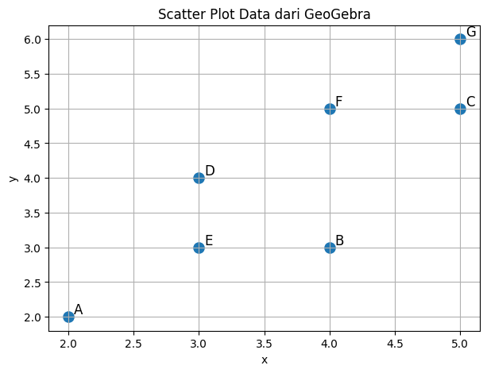
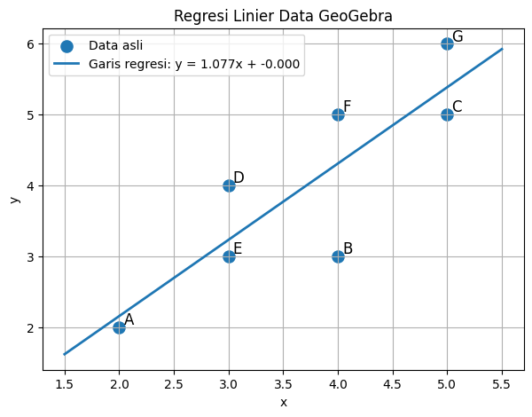
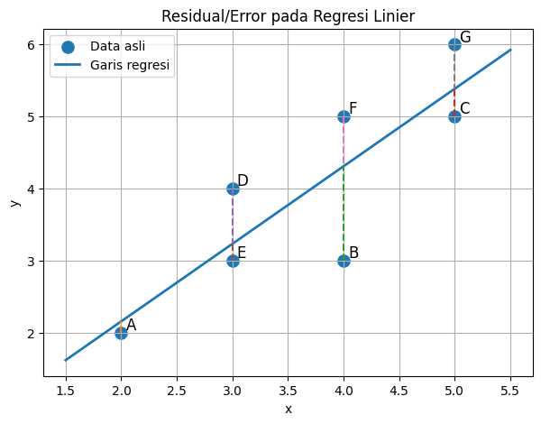
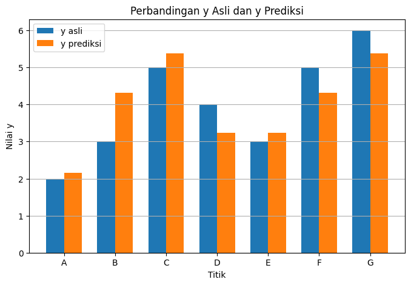
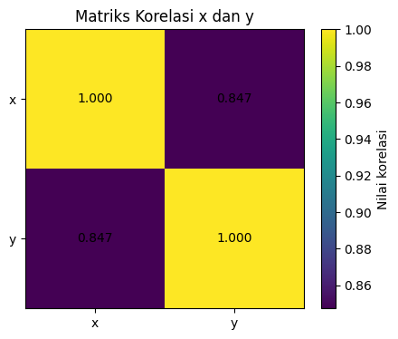

Analisa Data Menggunakan Regresi Linier (A)#
Notebook ini dibuat untuk menyelesaikan tugas Analisa Data Menggunakan Regresi Linier berdasarkan titik-titik pada gambar GeoGebra.
Data titik yang digunakan:
Titik |
x |
y |
|---|---|---|
A |
2 |
2 |
B |
4 |
3 |
C |
5 |
5 |
D |
3 |
4 |
E |
3 |
3 |
F |
4 |
5 |
G |
5 |
6 |
Tujuan notebook ini:
Membuat program regresi linier menggunakan
sklearn.Menghitung koefisien regresi secara analitik/manual.
Menghitung koefisien regresi menggunakan rumus matriks:
Menampilkan visualisasi yang diperlukan: scatter plot, garis regresi, residual/error, dan evaluasi sederhana.
1. Import library#
Library yang digunakan:
numpyuntuk perhitungan numerik dan matriks.pandasuntuk membuat tabel data.matplotlibuntuk visualisasi grafik.LinearRegressiondarisklearn.linear_modeluntuk membuat model regresi linier.metricsdarisklearnuntuk menghitung evaluasi model.
import numpy as np
import pandas as pd
import matplotlib.pyplot as plt
from sklearn.linear_model import LinearRegression
from sklearn import metrics
2. Memasukkan data dari GeoGebra#
Data diambil dari titik-titik pada gambar GeoGebra:
# Data titik dari GeoGebra
data = {
"Titik": ["A", "B", "C", "D", "E", "F", "G"],
"x": [2, 4, 5, 3, 3, 4, 5],
"y": [2, 3, 5, 4, 3, 5, 6]
}
df = pd.DataFrame(data)
df
| Titik | x | y | |
|---|---|---|---|
| 0 | A | 2 | 2 |
| 1 | B | 4 | 3 |
| 2 | C | 5 | 5 |
| 3 | D | 3 | 4 |
| 4 | E | 3 | 3 |
| 5 | F | 4 | 5 |
| 6 | G | 5 | 6 |
3. Visualisasi data awal#
Sebelum membuat model regresi, data divisualisasikan terlebih dahulu dalam bentuk scatter plot.
Tujuannya adalah melihat pola hubungan antara variabel \(x\) dan variabel \(y\).
plt.figure(figsize=(7, 5))
plt.scatter(df["x"], df["y"], s=90)
# Menambahkan label A-G pada setiap titik
for i, row in df.iterrows():
plt.text(row["x"] + 0.04, row["y"] + 0.04, row["Titik"], fontsize=12)
plt.title("Scatter Plot Data dari GeoGebra")
plt.xlabel("x")
plt.ylabel("y")
plt.grid(True)
plt.show()

Dari grafik terlihat bahwa ketika nilai \(x\) naik, nilai \(y\) juga cenderung naik. Karena pola data terlihat memiliki kecenderungan linier, maka regresi linier cocok digunakan.
4. Bentuk umum regresi linier#
Regresi linier sederhana memiliki bentuk:
Keterangan:
(y) adalah nilai target/respons.
(x) adalah variabel input/fitur.
(m) adalah koefisien regresi atau slope.
(b) adalah intercept atau konstanta.
Dalam notasi lain, persamaan dapat ditulis:
dengan:
(\beta_0 = b)
(\beta_1 = m)
5. Menghitung koefisien regresi secara analitik/manual#
Rumus slope:
Rumus intercept:
Langkah pertama adalah menghitung rata-rata \(x\) dan \(y\).
x = df["x"].values
y = df["y"].values
x_mean = np.mean(x)
y_mean = np.mean(y)
print("Rata-rata x =", x_mean)
print("Rata-rata y =", y_mean)
Rata-rata x = 3.7142857142857144
Rata-rata y = 4.0
Setelah rata-rata diperoleh, buat tabel bantu untuk menghitung:
df_manual = df.copy()
df_manual["x - x_mean"] = df_manual["x"] - x_mean
df_manual["y - y_mean"] = df_manual["y"] - y_mean
df_manual["(x - x_mean)(y - y_mean)"] = df_manual["x - x_mean"] * df_manual["y - y_mean"]
df_manual["(x - x_mean)^2"] = df_manual["x - x_mean"] ** 2
df_manual
| Titik | x | y | x - x_mean | y - y_mean | (x - x_mean)(y - y_mean) | (x - x_mean)^2 | |
|---|---|---|---|---|---|---|---|
| 0 | A | 2 | 2 | -1.714286 | -2.0 | 3.428571 | 2.938776 |
| 1 | B | 4 | 3 | 0.285714 | -1.0 | -0.285714 | 0.081633 |
| 2 | C | 5 | 5 | 1.285714 | 1.0 | 1.285714 | 1.653061 |
| 3 | D | 3 | 4 | -0.714286 | 0.0 | -0.000000 | 0.510204 |
| 4 | E | 3 | 3 | -0.714286 | -1.0 | 0.714286 | 0.510204 |
| 5 | F | 4 | 5 | 0.285714 | 1.0 | 0.285714 | 0.081633 |
| 6 | G | 5 | 6 | 1.285714 | 2.0 | 2.571429 | 1.653061 |
pembilang = np.sum((x - x_mean) * (y - y_mean))
penyebut = np.sum((x - x_mean) ** 2)
m_manual = pembilang / penyebut
b_manual = y_mean - m_manual * x_mean
print("Jumlah (x - x_mean)(y - y_mean) =", pembilang)
print("Jumlah (x - x_mean)^2 =", penyebut)
print("Slope / koefisien m =", m_manual)
print("Intercept b =", b_manual)
print(f"Persamaan regresi: y = {m_manual:.6f}x + {b_manual:.6f}")
Jumlah (x - x_mean)(y - y_mean) = 8.0
Jumlah (x - x_mean)^2 = 7.42857142857143
Slope / koefisien m = 1.0769230769230766
Intercept b = 8.881784197001252e-16
Persamaan regresi: y = 1.076923x + 0.000000
Hasil perhitungan manual menunjukkan:
Jadi persamaan regresi liniernya adalah:
6. Menghitung koefisien menggunakan rumus matriks#
Rumus yang digunakan pada tugas:
Karena bentuk model adalah:
maka matriks (X) dibuat dengan dua kolom:
Kolom pertama berisi angka 1 sebagai konstanta/intercept.
Kolom kedua berisi nilai (x).
Sehingga:
dan:
# Membentuk matriks X dan Y
X_matrix = np.column_stack((np.ones(len(x)), x))
Y_matrix = y.reshape(-1, 1)
print("Matriks X:")
print(X_matrix)
print("\nMatriks Y:")
print(Y_matrix)
Matriks X:
[[1. 2.]
[1. 4.]
[1. 5.]
[1. 3.]
[1. 3.]
[1. 4.]
[1. 5.]]
Matriks Y:
[[2]
[3]
[5]
[4]
[3]
[5]
[6]]
XtX = X_matrix.T @ X_matrix
XtY = X_matrix.T @ Y_matrix
XtX_inv = np.linalg.inv(XtX)
beta = XtX_inv @ XtY
print("X^T X:")
print(XtX)
print("\n(X^T X)^-1:")
print(XtX_inv)
print("\nX^T Y:")
print(XtY)
print("\nBeta:")
print(beta)
print("\nIntercept beta_0 =", beta[0][0])
print("Slope beta_1 =", beta[1][0])
X^T X:
[[ 7. 26.]
[ 26. 104.]]
(X^T X)^-1:
[[ 2. -0.5 ]
[-0.5 0.13461538]]
X^T Y:
[[ 28.]
[112.]]
Beta:
[[0. ]
[1.07692308]]
Intercept beta_0 = 0.0
Slope beta_1 = 1.0769230769230766
Dari hasil matriks diperoleh:
Artinya:
Maka:
atau:
7. Menghitung regresi linier menggunakan Scikit-Learn#
Bagian ini menggunakan library:
from sklearn.linear_model import LinearRegression
Pada sklearn, data input X harus berbentuk 2 dimensi, sehingga nilai \(x\) dibuat menjadi bentuk kolom.
# X untuk sklearn harus berbentuk 2 dimensi
X_sklearn = df[["x"]]
y_sklearn = df["y"]
model = LinearRegression()
model.fit(X_sklearn, y_sklearn)
m_sklearn = model.coef_[0]
b_sklearn = model.intercept_
print("Slope / koefisien m =", m_sklearn)
print("Intercept b =", b_sklearn)
print(f"Persamaan regresi: y = {m_sklearn:.6f}x + {b_sklearn:.6f}")
Slope / koefisien m = 1.076923076923077
Intercept b = -8.881784197001252e-16
Persamaan regresi: y = 1.076923x + -0.000000
Hasil dari sklearn sama dengan hasil manual dan hasil matriks, yaitu:
8. Membuat prediksi nilai y#
Setelah persamaan regresi diperoleh, prediksi nilai (y) dapat dihitung dengan:
Bagian ini menghitung nilai prediksi untuk setiap data asli.
df_hasil = df.copy()
df_hasil["y_prediksi"] = model.predict(X_sklearn)
df_hasil["residual_error"] = df_hasil["y"] - df_hasil["y_prediksi"]
df_hasil
| Titik | x | y | y_prediksi | residual_error | |
|---|---|---|---|---|---|
| 0 | A | 2 | 2 | 2.153846 | -0.153846 |
| 1 | B | 4 | 3 | 4.307692 | -1.307692 |
| 2 | C | 5 | 5 | 5.384615 | -0.384615 |
| 3 | D | 3 | 4 | 3.230769 | 0.769231 |
| 4 | E | 3 | 3 | 3.230769 | -0.230769 |
| 5 | F | 4 | 5 | 4.307692 | 0.692308 |
| 6 | G | 5 | 6 | 5.384615 | 0.615385 |
Keterangan:
\(y\) adalah nilai asli.
y_prediksiadalah nilai hasil model regresi.residual_erroradalah selisih antara nilai asli dan nilai prediksi.
Rumus residual:
9. Visualisasi garis regresi#
Grafik berikut menampilkan:
Titik data asli.
Garis regresi linier terbaik.
plt.figure(figsize=(7, 5))
plt.scatter(df["x"], df["y"], s=90, label="Data asli")
# Membuat garis regresi
x_line = np.linspace(df["x"].min() - 0.5, df["x"].max() + 0.5, 100)
y_line = model.predict(x_line.reshape(-1, 1))
plt.plot(x_line, y_line, linewidth=2, label=f"Garis regresi: y = {m_sklearn:.3f}x + {b_sklearn:.3f}")
for i, row in df.iterrows():
plt.text(row["x"] + 0.04, row["y"] + 0.04, row["Titik"], fontsize=12)
plt.title("Regresi Linier Data GeoGebra")
plt.xlabel("x")
plt.ylabel("y")
plt.grid(True)
plt.legend()
plt.show()
/usr/local/python/3.12.1/lib/python3.12/site-packages/sklearn/utils/validation.py:2691: UserWarning: X does not have valid feature names, but LinearRegression was fitted with feature names
warnings.warn(

Garis regresi tersebut adalah garis yang meminimalkan jumlah kuadrat error antara nilai asli dan nilai prediksi.
10. Visualisasi residual/error#
Residual adalah jarak antara titik data asli dengan garis regresi.
Jika residual kecil, berarti prediksi model dekat dengan nilai asli.
plt.figure(figsize=(7, 5))
plt.scatter(df_hasil["x"], df_hasil["y"], s=90, label="Data asli")
plt.plot(x_line, y_line, linewidth=2, label="Garis regresi")
# Garis residual dari y asli ke y prediksi
for i, row in df_hasil.iterrows():
plt.plot([row["x"], row["x"]], [row["y"], row["y_prediksi"]], linestyle="--")
plt.text(row["x"] + 0.04, row["y"] + 0.04, row["Titik"], fontsize=12)
plt.title("Residual/Error pada Regresi Linier")
plt.xlabel("x")
plt.ylabel("y")
plt.grid(True)
plt.legend()
plt.show()

Grafik residual menunjukkan jarak vertikal antara titik asli dan garis regresi. Jarak inilah yang diminimalkan oleh metode least squares.
11. Evaluasi sederhana model regresi#
Untuk melihat kualitas model, digunakan beberapa ukuran:
Mean Squared Error atau MSE#
MSE menunjukkan rata-rata kuadrat error. Semakin kecil nilainya, semakin baik model.
Root Mean Squared Error atau RMSE#
RMSE adalah akar dari MSE sehingga satuannya kembali sama dengan data (y).
R-squared atau (R^2)#
Nilai (R^2) menunjukkan seberapa besar variasi data (y) dapat dijelaskan oleh model.
y_pred = model.predict(X_sklearn)
mse = metrics.mean_squared_error(y_sklearn, y_pred)
rmse = np.sqrt(mse)
r2 = metrics.r2_score(y_sklearn, y_pred)
print("MSE =", mse)
print("RMSE =", rmse)
print("R^2 =", r2)
MSE = 0.4835164835164836
RMSE = 0.6953534953651154
R^2 = 0.7179487179487178
Interpretasi hasil evaluasi:
Nilai (R^2 \approx 0.7273).
Artinya sekitar 72.73% variasi nilai y dapat dijelaskan oleh nilai x menggunakan model regresi linier ini.
Sisanya sekitar 27.27% dipengaruhi oleh faktor lain atau error data.
12. Perbandingan y asli dan y prediksi#
Grafik berikut membandingkan nilai y asli dan y prediksi untuk setiap titik.
plt.figure(figsize=(8, 5))
index = np.arange(len(df_hasil))
width = 0.35
plt.bar(index - width/2, df_hasil["y"], width, label="y asli")
plt.bar(index + width/2, df_hasil["y_prediksi"], width, label="y prediksi")
plt.xticks(index, df_hasil["Titik"])
plt.title("Perbandingan y Asli dan y Prediksi")
plt.xlabel("Titik")
plt.ylabel("Nilai y")
plt.grid(axis="y")
plt.legend()
plt.show()

13. Matriks korelasi sederhana#
Karena hanya ada dua variabel yaitu \(x\) dan \(y\), matriks korelasi digunakan untuk melihat kekuatan hubungan linier antara keduanya.
Nilai korelasi berada pada rentang -1 sampai 1:
Mendekati 1 berarti hubungan positif kuat.
Mendekati -1 berarti hubungan negatif kuat.
Mendekati 0 berarti hubungan linier lemah.
corr = df[["x", "y"]].corr()
corr
| x | y | |
|---|---|---|
| x | 1.000000 | 0.847319 |
| y | 0.847319 | 1.000000 |
plt.figure(figsize=(5, 4))
plt.imshow(corr, interpolation="nearest")
plt.colorbar(label="Nilai korelasi")
plt.xticks(range(len(corr.columns)), corr.columns)
plt.yticks(range(len(corr.index)), corr.index)
for i in range(len(corr.index)):
for j in range(len(corr.columns)):
plt.text(j, i, f"{corr.iloc[i, j]:.3f}", ha="center", va="center")
plt.title("Matriks Korelasi x dan y")
plt.show()

Nilai korelasi antara \(x\) dan \(y\) bernilai positif, sehingga hubungan kedua variabel searah: ketika \(x\) naik, \(y\) cenderung ikut naik.
14. Kesimpulan akhir#
Berdasarkan data dari GeoGebra:
diperoleh hasil regresi linier:
Dengan nilai:
Artinya:
Intercept model adalah 0.
Koefisien regresi/slope adalah 1.076923.
Jika nilai (x) naik 1 satuan, maka nilai prediksi (y) naik sekitar 1.076923 satuan.
Model memiliki nilai (R^2 \approx 0.7273), sehingga hubungan linier antara \(x\) dan \(y\) cukup baik untuk data ini.
Hasil perhitungan manual, rumus matriks, dan sklearn menghasilkan nilai koefisien yang sama.